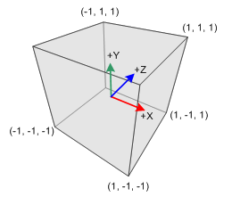
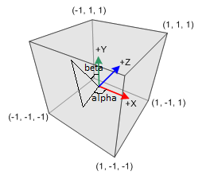
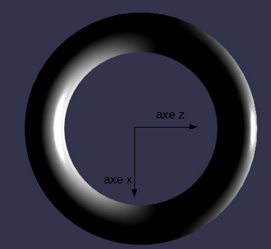
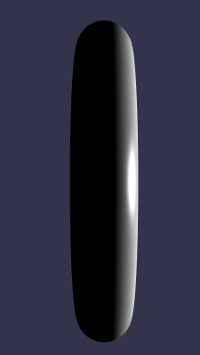
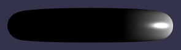

Qui dit scène 3D, dit 3 coordonnées (x,y,z) pour les points. Vous n'avez sans doute pas l'habitude de "raisonner" dans l'espace (en 3D) et cela peut-être quelque peu déroutants au départ. Donc, pas "d'inquiétude si vous éprouvez des difficultés.
Pour indiquer une position dans l'espace, il est nécessaire de créer un objet de type "Vector3" (attention au faux ami, cet objet représente un point, pas un vecteur !) :
new BABYLON.Vector3(x,y,z)
avec, évidement, x,y,z, les coordonnées du point dans l'espace.
Pour vous aider, voici une représentation du repère utilisé dans Babylon.js :
Commençons le "peuplement" de notre scène :
Reprenez l'application "app_01", ouvrez, à l'aide d'un éditeur de texte le fichier script.js et saisisser le code ci-dessous dans ce fichier.
script.js
var canvas = document.getElementById("renderCanvas");
var engine = new BABYLON.Engine(canvas, true);
var scene = new BABYLON.Scene(engine);
var camera = new BABYLON.ArcRotateCamera("maCamera", 0, 0, 10, new BABYLON.Vector3(0, 0, 0), scene);
var light = new BABYLON.PointLight("pointLu", new BABYLON.Vector3(0, 0, 10), scene);
var tore = BABYLON.Mesh.CreateTorus("torus", 5, 1, 50, scene, false);
scene.activeCamera.attachControl(canvas);
engine.runRenderLoop(function () {
scene.render();
});
Tester cet exemple
Analysons les différentes nouveautés :
la caméra
var camera = new BABYLON.ArcRotateCamera("maCamera", 0, 0, 10, new BABYLON.Vector3(0, 0, 0), scene);
Nous définissons ici la caméra qui filmera notre scène.
La caméra "ArcRotateCamera" est une caméra qui a la propriété de tourner autour du point qu'elle filme (cette rotation se fait à l'aide de la souris). La méthode "ArcRotateCamera" permet la création de ce type de caméra :
new BABYLON.ArcRotateCamera(nom, angle_alpha, angle_beta, rayon, point_visé, scene);
Passons en revu les différents paramètres de la méthode "ArcRotateCamera" :
signification des angles alpha et béta
ATTENTION : les angles "alpha" et "beta" sont en radian et pas en degré (petit rappel : π radian => 180°)
la lumière
Il existe différents types d'éclairage, mais, dans cette activité nous n'en verrons qu'un, le "point lumineux" : la source de lumière est un point, la lumière se propage dans toutes les directions depuis ce point.
Pour créer ce point lumineux, il faut utiliser la méthode "PointLight" :
new BABYLON.PointLight(nom,position, scene)
signification des 3 arguments de la méthode "PointLight" :
l'objet tore
Babylon.js vous permet de dessiner 4 types de mesh (objet 3D) : des cubes, des sphères, des cylindres, des plans et des tores.
Pour cette première scène, nous allons dessiner un tore (pour les connaisseurs, c'est le donut d'Homer Simpson).
La méthode "CreateTorus" est utilisée pour dessiner notre tore :
BABYLON.Mesh.CreateTorus(nom,diamètre, épaisseur, détail, scene, modifiable);
Pour terminer cette analyse de l'app_01, la ligne
scene.activeCamera.attachControl(canvas);
permet à la caméra de tourner (modification des angles "alpha" et "beta") autour du "point_visé" (utilisation de la souris).
Math.PI correspond à la valeur de π (3,14159..)
À la création de la scène, par défaut, le centre du tore a pour coordonnées (0,0,0). De plus, toujours par défaut, il se trouve dans le plan (x,z).
Vous pouvez modifier les coordonnées du centre du tore, à l'aide de l'attribut position de l'objet de type Mesh, par exemple pour notre tore :
tore.position=new BABYLON.Vector3(0, 5, 5)
Si vous désirez modifier une seule des trois coordonnées, vous pouvez utiliser, par exemple :
tore.position.z=5
Il est aussi possible de faire tourner le tore :
tore.rotation.x=Math.PI
provoque une rotation de π autour de l'axe x
tore.rotation.y=Math.PI/2
provoque une rotation de π/2 autour de l'axe y
tore.rotation.z=Math.PI/4
provoque une rotation de π/4 autour de l'axe z
Il est aussi possible de modifier la taille d'un mesh avec les attributs scale.x, scale.y et scale.z, un exemple :
tore.scale.z=0.5
Créer un nouvel exemple (app_02)
Reprener le code de l'app_01 et modifier les coordonnées du centre du tore. Modifier ensuite la taille du tore à l'aide de l'attribut "scale". Enfin, une fois ces transformations effectuées, modifier la position de l'éclairage et de la caméra comme bon vous semble.
ATTENTION : pour tout ce qui concerne la rotation, le tore possède ses propres axes x, y et z (on parle de repère local), se repère tourne en même temps que le tore, voici un exemple, qui, je l'espère, vous permettra de mieux appréhender cette notion de repère local.
Situation avec l'exemple app_01 (l'axe y pointe vers nous).
Si nous effectuons une rotation de 90°autour de l'axe x, nous verrons alors la tranche du tore verticalement.
Que se passe-t-il si ensuite nous effectuons une rotation autour de l'axe z encore de 90° ?
Si l'on y prend garde, on pourrait répondre : "rien, car dans cette situation z est un axe de symétrie".
Faites le test vous-même, alors ?
le résultat :
Pourquoi n'obtient-on pas le résultat "attendu" ?
Au moment de la rotation de 90° autour de l'axe x, l'axe z du tore a lui-même effectué une rotation de 90°.
Si vous effectuez ensuite une rotation de 90 ° autour de l'axe z, il est donc logique de voir toujours la tranche du tore, mais cette fois-ci à l'horizontale.